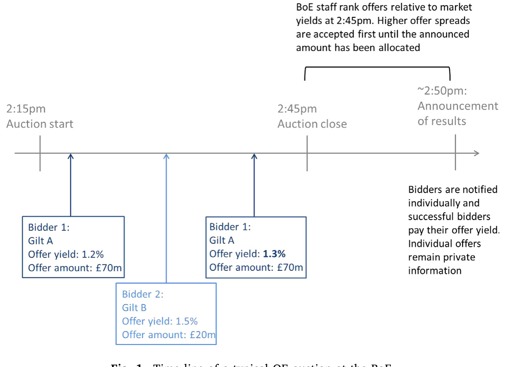
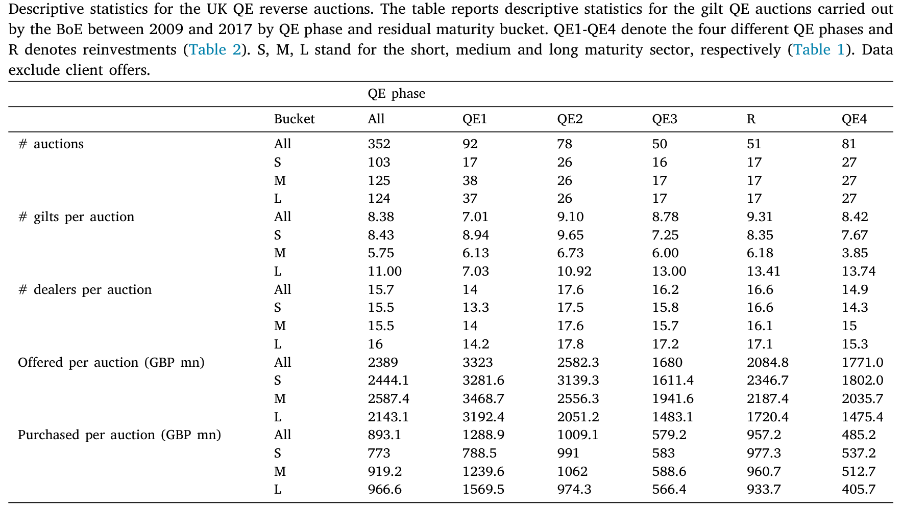
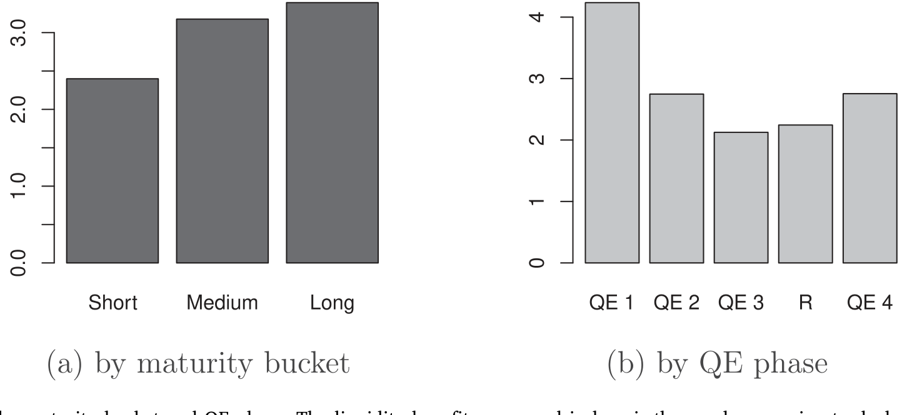
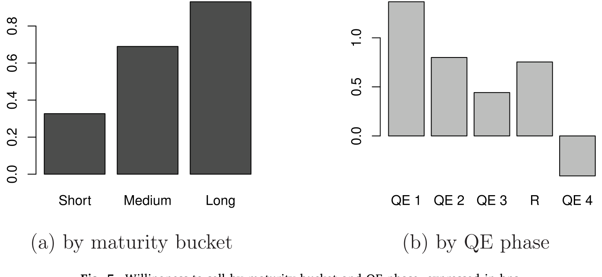
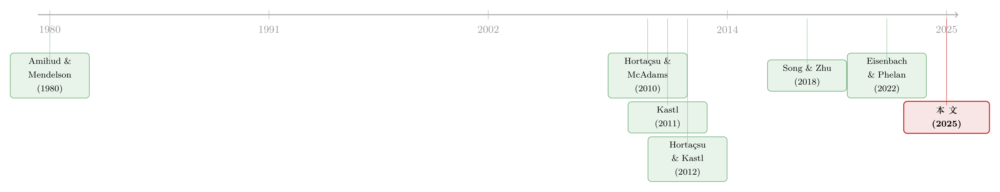

拍卖室里的暗账：当交易商把国债卖给央行，谁赚走了那点「流动性红利」？
本文读的是 Boneva, Kastl & Zikes (2025, Journal of Financial Economics)：他们拿到英格兰银行（BoE）量化宽松反向拍卖里被接受和被拒绝的全部报价，配上一个可分物品拍卖的均衡竞标模型，把交易商「愿意以多低的价格把国债卖给央行」这件藏在心里的事反推了出来。结论是——交易商从参与拍卖中赚到的「流动性红利」在金融危机最深处（QE1）最大，而他们的报价高低，又系在两条看不见的绳子上：拍卖前囤了多少利率风险，以及监管资本约束有多紧。
1 引言：一场没人看得见底牌的牌局
二〇〇九到二〇二二年间，英格兰银行一共买进了超过 £800 billion 的英国国债（gilts），相当于全部存量国债的约三分之一；到二〇二一年底，它手里的国债峰值达到 £875 billion，差不多是英国一年 GDP 的三分之一。这是一组让人有点眩晕的数字。我们都知道这叫量化宽松 (quantitative easing, QE)，知道它的宏观目的是在利率触及有效下限后继续放松货币、或者在国债市场失灵时充当「最后做市人」。
但如果把镜头从宏观推近，推到那间真正完成交易的拍卖室里，一个朴素的问题就浮上来了：这 8000 亿英镑，央行究竟是从谁手里、以什么价格、为什么愿意卖的人手里买来的？
这正是大多数研究够不着的地方。因为外人能看到的，永远只是拍卖结束后公布的总量——这场买了多少、付了多少。每一笔具体报价、谁报的、报了多高、有没有被接受，从不公开。于是关于 QE「划不划算」「有没有被交易商占便宜」的争论，多半只能拿市场价格去间接猜。
这篇文章的全部张力，几乎都来自一件别人没有的东西：他们同时拿到了被接受的报价和被拒绝的报价。被拒绝的那些报价，恰恰是反推交易商真实意愿的关键——后面会讲到为什么。
首先，让我们把这间拍卖室的规矩看清楚。
2 制度背景：一场「比谁要价更低」的反向拍卖
BoE 实施 QE 用的是一种多标的、多单位、歧视性价格的反向拍卖 (multi-object, multi-unit, discriminatory price reverse auction)。「反向」是因为卖家是市场、买家是央行；「歧视性价格」（又称 pay-as-bid）是指每个中标者按自己报出的价格成交，而不是统一的清算价。
参与者是英国国债的一级交易商（primary dealers，即 Gilt-Edged Market Makers）。拍卖每周举行，时间固定在下午 2:15 到 2:45，不同期限的国债分场进行。交易商可以提交任意多笔报价，每笔报价是一个「价格—数量—国债代码」的三元组——也就是说，每个交易商交上来的，其实是一条阶梯状的供给曲线。
拍卖一关闭，BoE 把所有报价按「报价收益率与拍卖收盘时二级市场收益率之差」（也就是相对二级市场的让价幅度）从优到劣排序，从最划算的开始接受，直到填满当天公告的购买量为止。所以对一个交易商来说，要想确保卖出，就得报一个足够「便宜」（让价足够大）的价格——但又不能太便宜，否则白白把租金让给了央行。这中间的取舍，就是整篇论文要撬开的东西。

Figure 1: Time line of a typical QE auction at the BoE
值得一提的是一个小细节：拍卖其实还附带一个非竞争性通道，可以按竞争性拍卖里的平均成交价卖出。但交易商几乎不用它——非竞争性报价要在中午前提交，会让交易商一直暴露在利率风险下直到下午快 3 点价格公布，而且一旦对应国债没在竞争性拍卖中成交，非竞争性报价就作废。结果是，非竞争性报价只占了购买量的约 1%。换句话说，绝大多数底牌都在那条竞争性供给曲线里。
3 数据：把「被拒绝的报价」也攒下来
接着，一个自然的问题是：拿到这条供给曲线之后，能做什么？
作者的数据覆盖二〇〇九年三月到二〇一七年三月之间的 352 场反向国债拍卖，横跨四个 QE 阶段（QE1–QE4）以及中间为了对冲到期国债而进行的再投资期。样本期内先后有 22 家一级交易商活跃过。每一场拍卖，他们都拿到了每一笔报价的明细：哪家交易商、卖哪只国债、报的收益率和数量、最终被分配到的数量（可以是零）——而且关键在于，这份明细不只含被接受的报价，还含所有被提交进来的报价，包括落选的那些。再配上拍卖收盘时（下午 2:45）二级市场的国债收益率，BoE 内部正是用它来做分配的。
为什么「被拒绝的报价」这么金贵？因为均衡竞标模型要反推的，是交易商面对的「剩余供给」（residual supply）的整个分布。一个交易商之所以在某个价位报某个量，是因为它预期别人会怎么报。被拒绝的那些报价，正好刻画出了竞争的另一侧——没有它们，你只能看到冰山露出水面的一角。
数据清洗里还有一处讲究：约 4% 的报价其实是交易商替客户代下的、带投机性质的单子，会污染对交易商自身意愿的估计。这些单子在数据里没有标签，作者用一个近似规则把它们剔掉——报价量超过 £100 million（约为国债市场典型成交规模的两倍）、或报价显著高于市场价的，判为客户单。
描述性统计本身就很有信息量（见表 4）。平均每场拍卖有约 8 只合格国债、约 15.7 家交易商参与；平均每场被报上来的量是 £2389 million，而实际买入只有 £893 million——也就是说，认购倍数大约 2.7 倍，拍卖普遍被超额覆盖。更要紧的是阶段差异：QE1 的拍卖明显更大，平均报上来 £3323 million、买入 £1289 million，远高于后面几轮，尤其在中长期限段。危机最深的时候，想卖国债给央行的人最多、量最大。这个事实，为后面的核心结果埋下了伏笔。

Table 4
4 识别策略：从报价「反推」出心里的价
然后，真正关键的一步来了：怎么把一条观察到的报价曲线，翻译成交易商「心里愿意卖出的价」？
这套方法不是凭空来的，它脱胎于可分物品拍卖（divisible good auction）的实证文献——Hortaçsu and McAdams (2010)、Kastl (2011)、Hortaçsu and Kastl (2012)。基本逻辑可以这样讲：
设想一个交易商 \(i\)，它把供给拆成若干档，在价位 \(b_{ik}\) 上愿意卖出累计数量 \(q_{ik}\)。它真正在乎的，是期望利润。卖出一单位国债，它收到报价 \(b_{ik}\)，但放弃了这只国债对自己的价值 \(v_i\)（这就是它的「售卖意愿」willingness-to-sell，本质是边际成本）。于是它要解的问题是：
$$ \max_{\{b_{ik},\,q_{ik}\}}\; \mathbb{E}\!\left[\, \sum_{k}\big(b_{ik}-v_i(q_{ik})\big)\,\tilde{x}_{ik} \,\right] $$
其中 \(\tilde{x}_{ik}\) 是第 \(k\) 档实际被接受的数量，它是随机的——取决于其他人怎么报，也就是取决于剩余供给的分布。这里的张力一目了然：报价 \(b_{ik}\) 报得越高，单位利润越厚，但被接受的概率越低。交易商在「要价」和「成交概率」之间走钢丝。
对这个期望利润求一阶条件，再把它反过来解，就能得到一条把观察得到的报价映射成观察不到的售卖意愿的关系。在反向拍卖里，它长这个样子：
这个式子的直觉值得停一下：一个卖家在反向拍卖里会抬高要价（shade up），所以它报出的 \(b_{ik}\) 一定高于它心里真实的售卖意愿 \(v_i\)，二者之差就是它赚到的私人信息租金。把这个租金（等号右边第二项）从报价里减掉，剩下的就是它愿意接受的最低价。这正是整套「反推」的灵魂——用别人报价的统计规律，去度量你自己那点没说出口的盘算。
[!note] 严格地说，上式是这支文献（Kastl, 2011; Hortaçsu & Kastl, 2012）标准反推技术在反向拍卖情形下的形式，作者沿用并尊重了 BoE 国债拍卖的制度细节（离散报价、阶梯供给、多券种）。具体的概率项要靠重采样交易商在不同拍卖里的报价来估计剩余供给分布。
有了每一笔报价对应的售卖意愿 \(\hat v_i\)，两件事就水到渠成了。第一，把报价和反推出的意愿之差加总，就得到交易商从参与拍卖中赚到的租金——作者把它叫做「流动性红利」（liquidity benefit）：相比直接到二级市场抛售（那样可能把价格砸下去），通过拍卖卖给央行能多拿到的那部分剩余。第二，反推出的 \(\hat v_i\) 本身，就成了一个可以被解释、被回归的因变量——交易商到底因为什么，愿意把国债便宜卖掉？
5 主要结果：危机里的红利，与资产负债表的两根绳
5.1 流动性红利在危机最深处最大
第一个核心结果，落在「什么时候 QE 最值钱」上。
作者发现，交易商赚到的流动性红利在 QE1（金融危机期间）最大，之后逐轮回落（见图 4）。这与「流动性渠道在市场动荡时更强」的既有认识高度一致：当市场失灵、人人都想同时抛掉大量安全资产时，央行以匿名、对价格不敏感的方式提供海量流动性，恰恰最能解危。换句话说，QE 作为二级市场流动性的「后备保障」，越是在危机里越有效。这也为 Eisenbach and Phelan (2022) 的理论提供了实证支持——当做市商的资产负债表容量被约束时，资产购买正是恢复安全资产市场秩序的利器。

Figure 4: Liquidity benefits by maturity bucket and QE phase. The liquidity benefit, expressed in bps, is the surplus accruing to dealers from partici
这个结论本身不算反直觉，但它的可贵之处在于：它不是从市场价格里间接猜出来的，而是从拍卖室里每一笔真实报价中结构性地估计出来的。
5.2 报价高低，系在资产负债表上
但真正让这篇论文从「又一篇 QE 研究」里跳出来的，是它对售卖意愿到底由什么决定的回答。这里出现了第一次反转：拍卖对交易商而言，远不只是被动的流动性出口，它是一件主动的资产负债表管理工具。
作者去抓了二级市场逐笔（audit trail）的交易数据，估计每家交易商在每场拍卖之前积累了多少利率风险，然后看它和反推出的售卖意愿之间的关系（见图 5）。结果很干脆：
- 当一个交易商在拍卖前增持了利率风险敞口，它的售卖意愿就更高——更急于把国债卖给央行，把不想要的风险甩出去；
- 反过来，如果它已经在别处卖掉了利率风险，它在拍卖里反而更不愿意卖。

Figure 5: Willingness-to-sell by maturity bucket and QE phase, expressed in bps
这与做市商的经营逻辑严丝合缝：一级交易商靠短期批发融资为库存融资，靠头寸限额、风险因子限额、在险价值（Value-at-Risk）限额来管理库存风险，目标是尽量保持「平账」、从买卖价差里挣钱，而不是去赌利率方向。所以一旦在二级市场被动吃进了一大笔利率风险，QE 拍卖就成了一个现成的、不会砸价的退出口。（关于做市商如何在「无风险」的国债市场里被风险限额这根绳牵着走，可参见《无风险市场里的风险厌恶：是谁给做市商系上了「风险限额」这根绳》。）
5.3 第二根绳：监管资本与那条 2016 年的豁免
第二次反转更精彩，也更具政策含义。二〇一六年，英国引入了一条豁免规则：银行可以通过把国债换成央行准备金来改善其杠杆率（leverage ratio，即不论资产风险高低都必须持有的最低股本比例）——因为准备金在杠杆率计算里被网开一面。
于是一个尖锐的问题浮现：交易商会不会借 QE 拍卖来满足监管约束？作者的估计给出了肯定的回答——售卖意愿确实随交易商的监管资本状况而显著变化，结果与「交易商主动用 QE 拍卖来达到杠杆率要求」相一致。这意味着，央行买债这件事，在微观层面上一部分被交易商当成了调节监管比率的杠杆。这条线索把这篇论文接到了另一支文献上——监管（尤其杠杆率）如何影响做市商在安全资产市场的中介能力（Duffie, 2018; Favara et al., 2022; Breckenfelder & Ivashina, 2023）。
5.4 这场拍卖，央行花了多少冤枉钱？
最后，把视角切回纳税人。作者算了 BoE 运行这些拍卖的成本——也就是它为这些流动性红利「买单」的部分——平均约为 0.4 bps，低于国债市场的平均买卖价差。当然，正如作者诚实指出的，这点拍卖成本必须放进 QE 更宏大的宏观收益里去看（实现通胀目标）。但至少在「拍卖机制本身贵不贵」这个微观问题上，答案是：相当便宜。
6 文献脉络：从「库存做市」到「拍卖里的资产负债表」
把这篇论文放回它的来路，会看得更清楚。
最早的源头是市场微观结构里关于做市商与库存的经典——Amihud and Mendelson (1980) 把做市刻画成一门管理库存的生意，做市商的报价取决于它手里的存货与风险。这条线一路延伸到今天对交易商资产负债表约束的关注。
另一条线是可分物品拍卖的实证方法论：Hortaçsu and McAdams (2010) 在土耳其国债拍卖里开创性地从报价反推估值，Kastl (2011) 处理了离散报价这一现实约束，Hortaçsu and Kastl (2012) 在加拿大国债拍卖里度量了交易商的信息优势。本文用的「反推」工具，正是从这里借来的。

第三条线，是用拍卖数据透视 QE 的成本与设计这支更年轻的文献：Song and Zhu (2018) 研究了美国国债 QE 拍卖里的交易商利润，Bonaldi et al. (2015) 评估了美联储 MBS 拍卖的效率，Breedon (2018) 算过英国 QE 的「往返」成本。再加上把央行干预与国债市场功能联系起来的工作——Vissing-Jorgensen (2020) 记录了二〇二〇年「抢现金」期间美联储购债压低了国债收益率，Eisenbach and Phelan (2022) 从理论上论证了当交易商资产负债表受限时购债尤其有效。
这篇论文恰好站在这三条线的交汇处：它用第二条线的方法，处理第三条线的问题，而把答案锚定在了第一条线（资产负债表与库存风险）上。它的独到，全在那份含被拒绝报价的数据——这正是 Song and Zhu (2018) 等只能用公开拍卖结果的研究所缺的一块。（如果你对「交易商资产负债表如何在两个市场之间溢出」这个母题感兴趣，可参见《一张资产负债表，两个市场：当国债拍卖悄悄挤掉了 MBS 的做市能力》。）
7 评论与延伸（Q&A + 研究方向）
(a) 几个可能的疑问
Q：既然只能看到报价，「售卖意愿」是怎么被识别出来的，凭什么相信它？
靠的是均衡假设加上剩余供给的可观测性。模型假设交易商理性预期自己面对的剩余供给分布、并提交最大化期望利润的报价；既然同一批交易商在 352 场拍卖里反复竞标，作者就能用这些重复报价去估计「某一档恰好成为边际」的概率，再用一阶条件把报价里的租金减掉。识别的可信度，最终系在「交易商真的在做期望利润最大化、且对竞争分布有理性预期」这个行为假设上。
Q：这和「私人信息租金」是不是一回事？为什么又冒出个「流动性红利」？
两者要分开。私人信息租金是任何歧视性拍卖里策略性竞标者都会赚到的、来自抬价（bid shading）的常规剩余；流动性红利则是相对于「拿到二级市场去砸盘抛售」这一外部选项而言、通过拍卖卖出所能多拿到的剩余。前者是拍卖机制的内生产物，后者衡量的是 QE 拍卖作为流动性后备的价值——本文的贡献正是把后者从前者里剥出来并度量。
Q：流动性红利在 QE1 最大，会不会只是因为 QE1 的拍卖规模本来就大？
规模确实更大（QE1 平均报上来
£3323 million、买入£1289 million），但红利是按基点（bps，即单位金额上的剩余）度量的，并非简单的总量。更大的红利率反映的是危机期间剩余供给更不利、交易商面临的流动性约束更紧，这与「流动性渠道在动荡时更强」的机制一致，而不仅仅是分母变大。
Q：交易商「借拍卖满足杠杆率」，这是钻空子还是政策本意？
它本身是 2016 年豁免规则的直接后果——准备金在杠杆率计算里被豁免，用国债换准备金自然能改善比率。说它是「钻空子」并不公平；更准确的说法是，监管设计无意中给了交易商一个用 QE 拍卖来管理监管约束的动机，而本文用估计出的售卖意愿随监管资本变化这一事实，把这个动机量化了出来。
Q：0.4 bps 的成本，是不是说 QE 几乎免费？
不能这么读。0.4 bps 只是拍卖机制本身让渡给交易商的那点剩余，低于市场买卖价差，说明拍卖设计是高效的。但 QE 真正的成本与收益在宏观层面（资产负债表风险、退出时的损益、对通胀与金融稳定的影响），那是另一本完全不同的账。
Q：这些结论能不能推广到美联储或欧央行？
机制（库存风险 + 监管资本驱动售卖意愿）大概率有普适性，但量级未必。英国那条 2016 杠杆率豁免是制度特例；美国国债 QE 拍卖里 Song and Zhu (2018) 用的是公开数据、识别不到被拒报价。要复制本文最关键的一步，得先拿到别国央行含落选报价的明细数据——这恰恰是最难的。
(b) 几个可能的研究问题与提案
1）把「售卖意愿」搬到公司债 QE 拍卖上。 【经济故事】BoE 在 2020 年也买了英镑非金融投资级公司债。公司债不像国债那样同质、流动，做市商的库存风险和违约风险纠缠在一起，售卖意愿的决定因素可能完全不同——信用利差、评级临界点、是否临近降级，都可能进来。 【可行性】中。方法可直接移植，难点在数据：需要公司债 QE 拍卖含落选报价的明细，且要匹配交易商的逐笔公司债库存。若能拿到 BoE 的企业债购买计划（CBPS）数据，identification 是 doable 的。
2）拍卖前的二级市场交易，是不是「为拍卖而囤」？ 【经济故事】本文发现拍卖前增持利率风险的交易商更愿意卖。但因果方向可以反过来追问：交易商会不会预期到某只国债将进入拍卖、于是提前在二级市场建仓，再到拍卖里卖给央行套利？这关系到 QE 是否被前置交易「抢跑」。 【可行性】中。需要逐笔 audit trail 数据（本文已用到部分），以合格券公告日为事件点做事件研究，比较「即将合格」与「不合格」国债在公告前后交易商持仓的变化。识别靠合格券名单的公布时点。
3）杠杆率豁免的「准自然实验」。 【经济故事】2016 年豁免规则给出了一个清晰的时间断点：豁免前后，用国债换准备金对杠杆率的边际价值发生了跳变。可以用它做差分，看交易商售卖意愿、参与强度在豁免前后是否结构性变化。 【可行性】高。时间断点明确，本文数据正好横跨 2016（QE4 始于 2016 年 8 月）。可比组可取不受杠杆率约束的非银参与者。这是本文已触及、但值得单独做精细识别的方向。
4）流动性红利能不能预测二级市场的事后压力？ 【经济故事】如果某场拍卖里估出的流动性红利特别高，是否意味着那段时间二级市场流动性特别紧、事后买卖价差会扩大、价格冲击会更明显？把结构估计出的红利当作一个「市场紧张度」的前瞻指标，是有意思的桥接。 【可行性】高。红利已由本文方法得到，二级市场流动性指标（买卖价差、Amihud 非流动性）可由 audit trail 或行情数据构造，做时间序列/面板预测即可。
5）外资交易商 vs. 本土交易商的行为差异。 【经济故事】22 家一级交易商里有大量外资行（London Branch）。受英国杠杆率监管约束的程度、母行的资产负债表压力都不同，它们的售卖意愿与流动性红利可能系统性地有别。这能照见监管的跨境异质性。 【可行性】中。交易商身份在数据里可得，按监管归属分组即可；难点是要外生地刻画各行母公司的资本约束，可能需要拼接监管报表或财报数据。
8 我的判断
这篇论文最扎实的贡献，是把一件长期只能靠市场价格「外部猜测」的事——QE 到底给交易商让渡了多少剩余、交易商又凭什么愿意卖——搬进了拍卖室内部，用一份罕见的含落选报价的明细把它结构性地估了出来。「流动性红利在危机最深处最大」这一结论，为「QE 作为流动性后备最有效」提供了迄今最干净的微观证据之一；而「售卖意愿系在库存利率风险与监管资本两根绳上」这一发现，则把 QE 从一个纯货币政策叙事，拽回到了做市商资产负债表的现实里。
对识别，我有两点保留。其一，整套反推依赖「交易商理性预期剩余供给分布并最大化期望利润」这个均衡假设——这在结构估计里是常规代价，但在危机最混乱的 QE1，交易商是否真的在做这样精细的最优化，还是更多被流动性约束逼着「能卖就卖」，会直接影响 QE1 红利估计的解读。其二，杠杆率那条线目前更像相关证据：豁免规则确实提供了一个漂亮的断点，但本文似乎没有把它做成一个完整的、带可比组的差分设计，因果链条还可以再收紧。
后续我最想看到的，是把这套方法搬到公司债与信用市场——那里同质性更差、库存风险更复杂，售卖意愿的决定因素很可能改写；以及把估出的流动性红利当作前瞻指标，去预测二级市场事后的流动性压力。如果这两步走通，这篇论文就不只是一篇关于 BoE 拍卖的好文章，而会成为一套可迁移的、度量「危机里中介能力有多紧」的通用工具。
参考文献
- Amihud, Y., & Mendelson, H. (1980). Dealership market: Market-making with inventory. Journal of Financial Economics 8(1), 31–53.
- Bonaldi, P., Hortaçsu, A., & Song, Z. (2015). An Empirical Test of Auction Efficiency: Evidence from MBS Auctions of the Federal Reserve. Finance and Economics Discussion Series 2015-082, Federal Reserve Board.
- Breckenfelder, J., & Ivashina, V. (2023). Bank Leverage Constraints and Bond Market Illiquidity During the COVID-19 Crisis. ECB Research Bulletin No. 89.
- Breedon, F. (2018). On the transaction costs of UK quantitative easing. Journal of Banking & Finance 88, 347–356.
- Duffie, D. (2018). Financial regulatory reform after the crisis: An assessment. Management Science 64, 4471–4965.
- Eisenbach, T., & Phelan, G. (2022). Fragility of Safe Asset Markets. Staff Report No. 1026, Federal Reserve Bank of New York.
- Favara, G., Infante, S., & Rezende, M. (2022). Leverage Regulations and Treasury Market Participation: Evidence from Credit Line Drawdowns. Working Paper, Federal Reserve Board.
- Hortaçsu, A., & Kastl, J. (2012). Valuing dealers' informational advantage: A study of Canadian treasury auctions. Econometrica 80(6), 2511–2542.
- Hortaçsu, A., & McAdams, D. (2010). Mechanism choice and strategic bidding in divisible good auctions: An empirical analysis of the Turkish treasury auction market. Journal of Political Economy 118(5), 833–865.
- Kastl, J. (2011). Discrete bids and empirical inference in divisible good auctions. Review of Economic Studies 78, 978–1014.
- Song, Z., & Zhu, H. (2018). Quantitative easing auctions of treasury bonds. Journal of Financial Economics 128(1), 103–124.
- Vissing-Jorgensen, A. (2020). The treasury market in spring 2020 and the response of the federal reserve. Journal of Monetary Economics 124, 19–47.
- Vissing-Jorgensen, A., & Krishnamurthy, A. (2011). The effects of quantitative easing on interest rates: Channels and implications for policy. Brookings Papers on Economic Activity 43(2), 215–287.